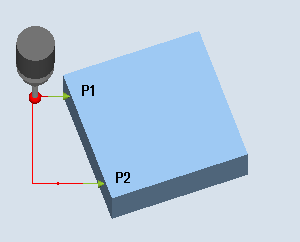
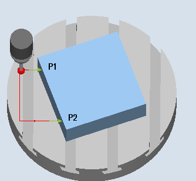
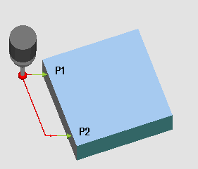

The workpiece lies in any direction, i.e. not parallel to the workpiece coordinate system (WCS) on the work table. By measuring two points on the workpiece reference edge that you have selected, you determine the angle to the active coordinate system. You can correct this angle as a rotation either in a geometry axis or as translatory offset in a rotary axis (rotary table) in any WO or in the active WO.
| Note |
Maximum measured angleUsing the "Align edge" measuring variant, a maximum angle of +/- 45 degrees can be measured. |
The Align edge measuring variant is performed according to the 1-angle measurement principle:
For a clamped workpiece that is rotated in the plane, the angular offset is in the rotary part of the geometry axis that is located perpendicular to the measuring plane.
Example of G17 plane: Measuring axis X, offset axis Y
Angular offset is realized in the Z rotation
The rotation offset in the WO is performed so that the actual position of the edge (actual value) and the desired setpoint angle (α) in the workpiece coordinate system must be taken into account.
For a workpiece on a rotary table, the angular offset is added to the translatory offset of the rotary axis (table axis). The correction only makes sense if the rotary axis rotates around the geometry axis that is located perpendicular to the measuring plane.
Example of G17 plane: Measuring axis X, offset axis Y
Angular offset is realized in the C axis. Rotary axis C rotates a rotary table around the Z axis.
After the measurement, the rotary axis should be repositioned to align the workpiece.
Example: G55 G0 C0.
For both correction variants, the translatory components of the WO remain unchanged and should be redetermined after the edge has been aligned. This can be realized in a subsequent measuring program using the function "Set edge".
|  |  |
Measure: Align edge (CYCLE998), | Measure: Align edge (CYCLE998), |
Precise measurement is only possible with a calibrated probe, i.e. machining plane, orientation of the spindle in the plane and measuring velocity are the same for both measurement and calibration. Deviations can cause additional measuring errors.
With measuring method "3D probe with spindle reversal", measuring point P1 is measured twice each with 180 degrees spindle reversal (probe rotated through 180 degrees) and 0 degrees. This means that the trigger points for the corresponding axis direction are currently being newly determined for this measurement (it is not necessary to calibrate the probe in the measuring direction). The measuring method "3D probe with spindle reversal" only makes sense for align edge of the axes in the working plane (for G17 XY).
The special procedure for this measurement permits the use of an uncalibrated multi-directional probe. Probe types 712, 713 and 714 are not suitable for this purpose. A positionable spindle is mandatory.
The probe must be called as a tool with a tool length compensation.
Tool type of the probe:
3D multi probe (type 710)
Mono probe (type 712)
| Note |
Precisely determining the angle requires the corresponding surface quality at least at one of the measuring points. The distances between the measuring points should be selected as high as possible. |
| Note |
The "3D probe with spindle reversal" function (differential measurement) is only possible in the axes of the plane. The probe types 712, 713 and 714 generally cannot be used for this measuring method. |
| Note |
A SPOS-capable spindle is needed for the function "3D probe with spindle reversal" or for probe types 712, 713, and 714. |
Measuring axis and positioning axis (offset axis) can be preselected as required; however, they may not be the same.
Positioning taking into account a protection zone
Protection zone = no
The probe is positioned in the measuring axis, as a maximum at the distance of measurement path DFA with respect to the surface to be measured in front of measuring point P1 at the measuring height.
Protection zone = yes
The probe is positioned in the measuring axis as a maximum the distance from the measuring path DFA and the absolute value in parameter DX (for G17 and measuring axis X) with respect to the surface to be measured in front of measuring point P1 at the measuring height.
In both cases, when making the measurement, measuring point P1 must be able to be safely reached.
If the distances from the reference edge are selected too large for the 1st measurement, then a measurement is not made.
Intermediate positioning "parallel to the edge"
Aligning the edge (CYCLE998), intermediate positioning "parallel to the edge"
The probe travels parallel to the reference edge at the distance of parameter L2 in front of measuring point P2. In so doing, the angle from parameters α and TSA is taken into account. TSA contains the value for the maximum permissible angular deviation.
Intermediate positioning "parallel to the axis"
Aligning the edge (CYCLE998), intermediate positioning "parallel to the axis"
The probe travels parallel to the positioning axis (offset axis) at a distance of parameter L2 in front of measuring point P2.
After the end of measurement, the probe is at measuring point P2 at the distance of the measurement path DFA with respect to the measuring surface.
See also:
Measure: Align edge (CYCLE998)